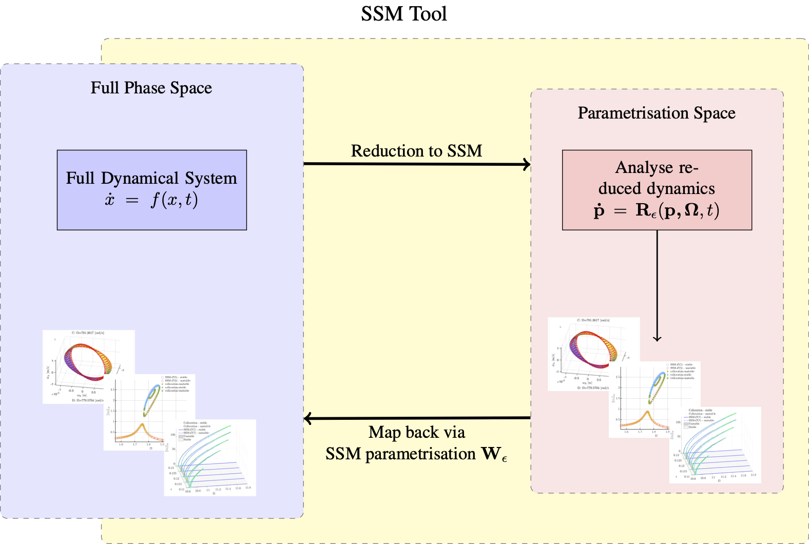

SSMTool 2.6
Welcome to the documentation of SSMTool! This is an open source toolbox for exact reduced order modelling via computing Spectral Submanifolds (SSM) directly from equations of motion. For a machine-learning based approach which relies on trajectory data for computing SSMs, please refer to SSMLearn.
Functionality
This package computes invariant manifolds in high-dimensional dynamical systems using the Parametrization Method with special attention to the computation of SSMs and their associated reduced-order models for finite element models. These invariant manifolds are computed in the physical coordinates using only the master modes resulting in efficient and feasible computations for high-dimensional finite-element problems. A schematic depiction of the functionality of SSMTool is provided in the figure below. For a given dynamical system, the SSM is computed over a set of chosen modes. Due to the invariance of the manifold, the reduced dynamics on this manifold constitute an exact reduced order model for the full dynamical system. These are then analysed with a number of functionalities provided with our toolbox. Objects of interest that can be investigated are the equlibria of a system, its steady state response, invariant tori, backbone curve and general bifurcation behaviour. The captured results are consequently mapped back from the parametrisation space onto the invariant manifold in the full physical phase space via the SSM parametrisation.

Documentation
Legacy: An account of all prior versions of SSMTool along with a listing of relevant publications in the general context of SSM-Theory can be accesed in Legacy.
Library: In the Library an in-depth documentation of the source-code of SSMTool is presented. At the core there lie three classes:
- Dynamical System is used for setting up and handling full dynamical systems.
- Manifold is used to compute and store general invariant manifolds for a given dynamical system.
- SSM is used to compute SSMs and analyse the dynamics on them. It contains a set of methods that enable the detailled and customised analysis of the reduced dynamics and for mapping the results back to physical coordinates.
Theory: An introduction to the theory of SSMs, along with explanations on their computation and the importance of invariance in the context of reduced order modelling can be accesed in the Theory section.
Tutorials: Several tutorials that introduce the functionalities of SSMTool and the various methods are provided in Tutorials, along with a wide set of published examples, which serve both as tutorials and a transparent documentation of the peer reviewed research that is coupled to the development of SSMTool.
Installation
In order to install the toolbox, simply run the install.m file in the main folder. The examples can be found in the examples directory. Note: When running the examples in the livescript files (workbooks), please ensure that the MATLAB 'Current Folder' is the directory of the specific example.
Contact
This is an open-source toolbox, provided via github. For bugreports, enhancements and questions please make use of the issue-reporting feature: https://github.com/jain-shobhit/SSMTool/issues.
For direct inquiries please email shobhit.jain@tudelft.nl and limw@sustech.edu.cn with any questions about the toolbox that cannot be resolved via issue reporting. Feedback and further suggestions are more than welcome.